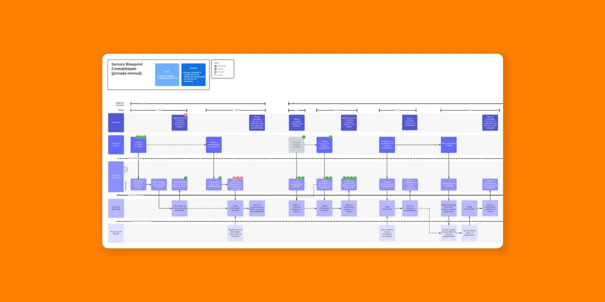
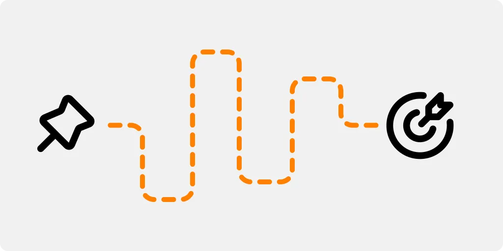
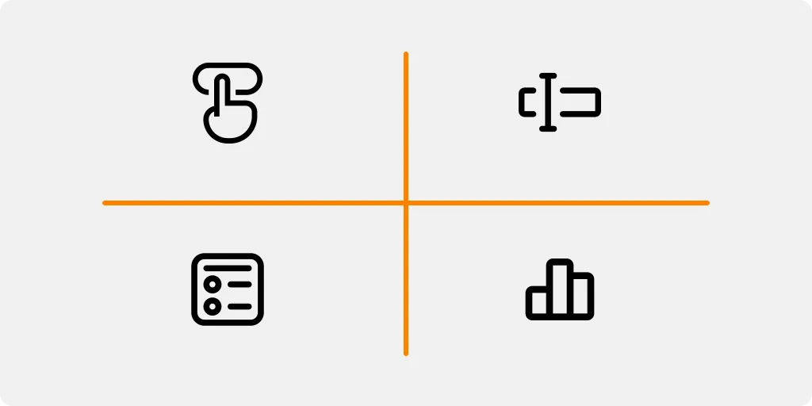
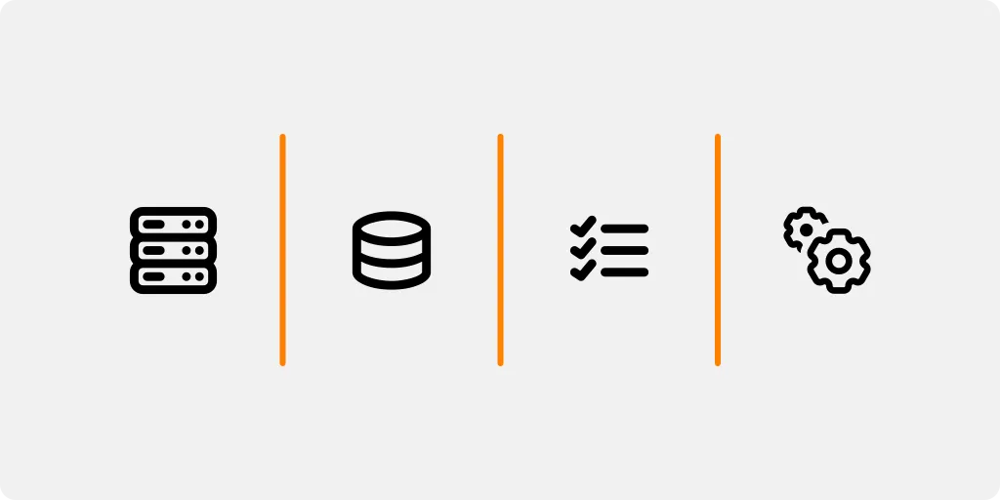
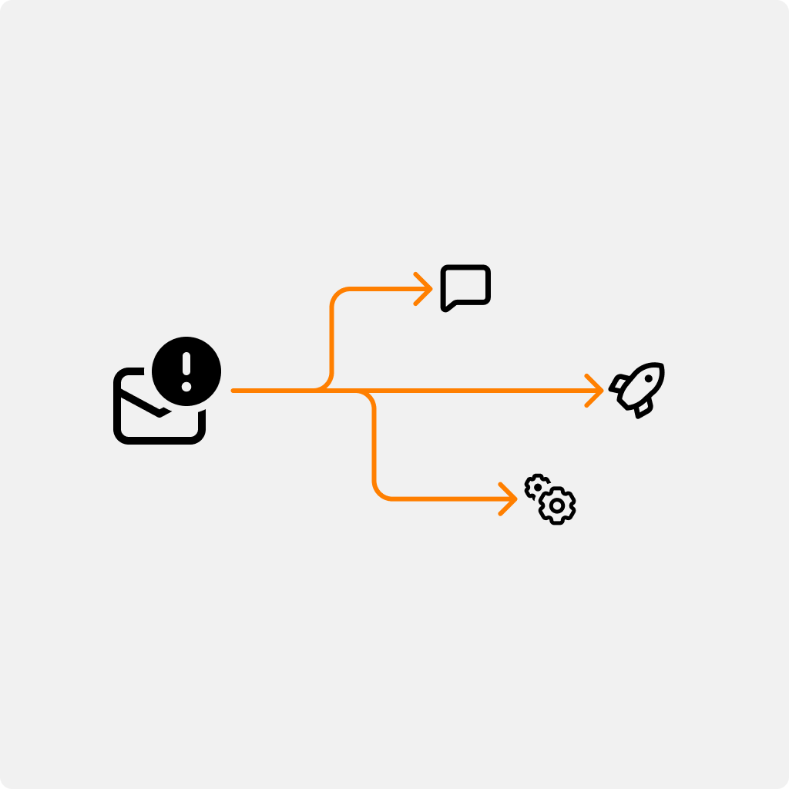
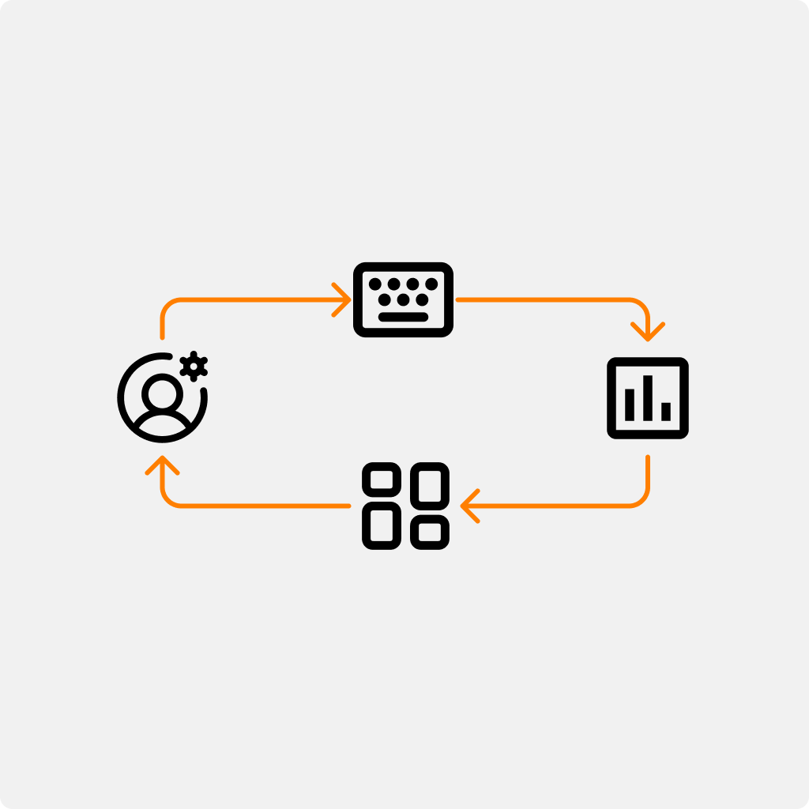
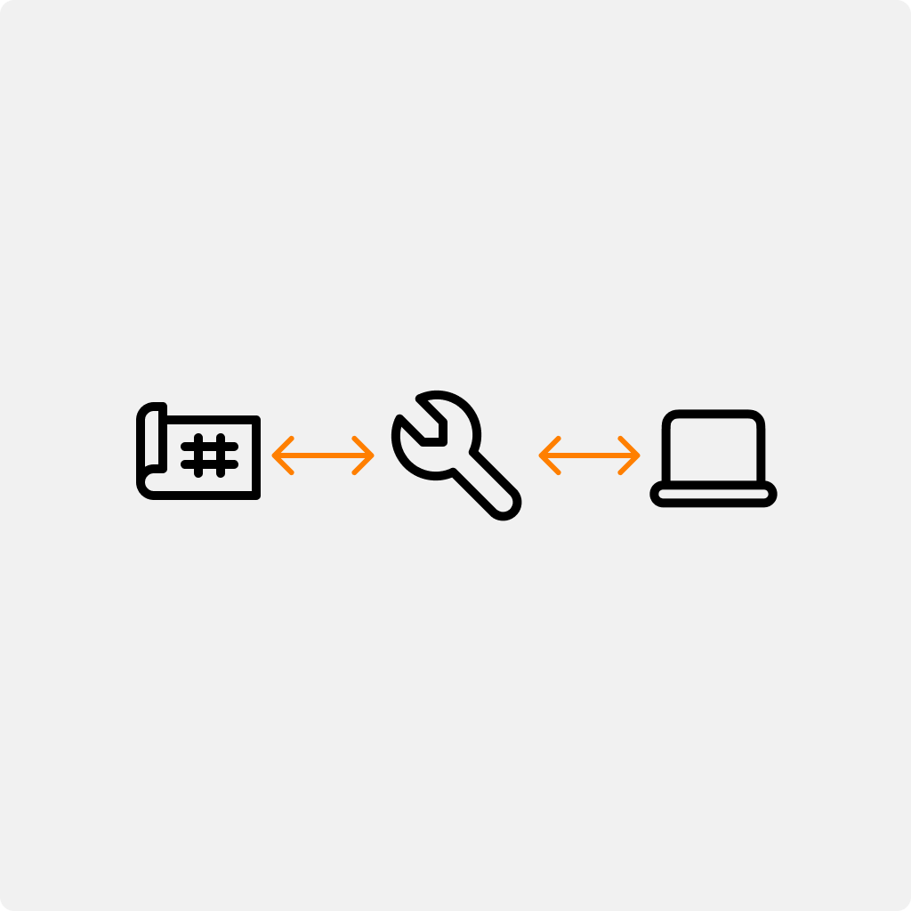
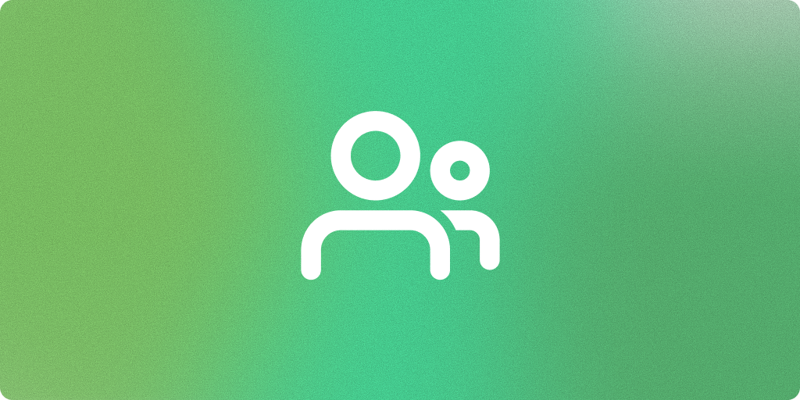

Thomson Reuters / Onvio
Accountability Blueprint
A service blueprint mapping the Accountability Team's end-to-end workflow across customer interactions, internal operations, and supporting systems.
Role:
Service Designer
Tags:
Documentation
UX Strategy
Optimization
Overview
The Accountability Team relied on a complex workflow involving multiple systems, manual processes, and cross-functional teams.
As the product evolved, delays, duplicated work, and usability issues became increasingly difficult to trace.
I brought stakeholders together to map the service end to end, uncover operational friction, and create a shared foundation for future improvements.
The challenge
Complexity hidden across teams
Issues reported by one team often originated elsewhere in the workflow. Without a shared view of the service, understanding dependencies and identifying improvement opportunities was difficult.
The challenge: How might we make the entire service visible and help teams understand where friction originates?
Mapping the service
From isolated perspectives to a shared view
I worked with stakeholders across the product to document the service through three layers. Together, these layers connected the customer experience with the operations behind it.

Customer Journey
Mapped user actions, goals, decisions, and interactions across the service.

Frontstage
Documented customer-facing interfaces, notifications, support interactions, and system feedback.

Backstage
Connected internal processes, teams, and systems supporting each interaction — revealing dependencies and operational bottlenecks.
The complete service blueprint
The complete blueprint brought customer interactions, internal workflows, and operational dependencies into one view — helping teams understand how different parts of the service connected.
The Process
Getting everyone aligned
The main challenge wasn't documenting the workflow. It was helping stakeholders understand the purpose and value of the blueprint.
Each session involved explaining the approach, gathering details from different teams, and connecting individual perspectives into one coherent service.
I consolidated the findings into an initial blueprint, then brought stakeholders together again to validate missing dependencies and align the complete workflow.
Finding friction
Connecting problems to their root causes
Once the service was mapped, feedback and pain points became easier to connect across teams.
Five recurring friction areas emerged:
- Repeated manual work
- Unnecessary approvals
- Unclear ownership
- Disconnected systems
- Inconsistent communication
The blueprint helped distinguish isolated usability issues from problems rooted in operational dependencies.

Prioritizing improvements
From visibility to action
With the main friction points identified, stakeholders worked together to define improvement opportunities.
The blueprint connected these opportunities to customer impact and operational constraints.
Automation
Reduce repetitive manual tasks.
Visibility
Improve access to system and process information.
Communication
Reduce unnecessary touchpoints and introduce contextual guidance.
Simplification
Streamline critical workflows and approvals.

Design opportunity
Connecting user friction to improvement opportunities
Recent user research findings were added to the service blueprint to validate and support the friction points identified during the mapping process. The research highlighted difficulties users faced when searching for account types and completing required configuration steps, reinforcing the need for clearer guidance throughout the experience.
1. Difficulty finding account types
Users struggled to identify and search for the correct account nature.
2. Incomplete setup
Some users did not complete the configuration process due to difficulties during registration.
3. Confusing account type selection
The account nature screen was confusing, making it harder for users to understand available options.
↘︎
↓
↙︎
Guide users through the required information
Make each step clearer, explain what information is needed, and guide users through completing the required fields — reducing uncertainty during registration and configuration.
Creating a shared understanding
One service. Multiple perspectives.
The blueprint became a communication tool for Product, Engineering, Business, and the Accountability Team.
Instead of discussing isolated screens or individual complaints, stakeholders could understand how decisions affected the wider service.
Before guiding future improvements, the blueprint was reviewed with senior stakeholders and end users to validate its accuracy.

Outcome
Making complex services visible
The blueprint connected customer experience, internal operations, and system dependencies into one shared reference.
Better visibility
Teams understood the complete service ecosystem.
Faster prioritization
Pain points became easier to identify and discuss.

Cross-functional alignment
Stakeholders shared a common decision-making tool.

Foundation for future improvements
The blueprint supported future discovery and workflow optimization.
In summary:
1
End-to-end service mapped
3
Service layers documented
5
Key friction areas identified
4
Teams aligned
1
Shared decision-making tool
1
Foundation for future improvements
What I learned
Service design isn't only about documenting processes. Its value comes from helping people connect perspectives, understand dependencies, and make better decisions together.
The most important work was translating fragmented knowledge into a shared understanding that teams could use beyond the mapping exercise.